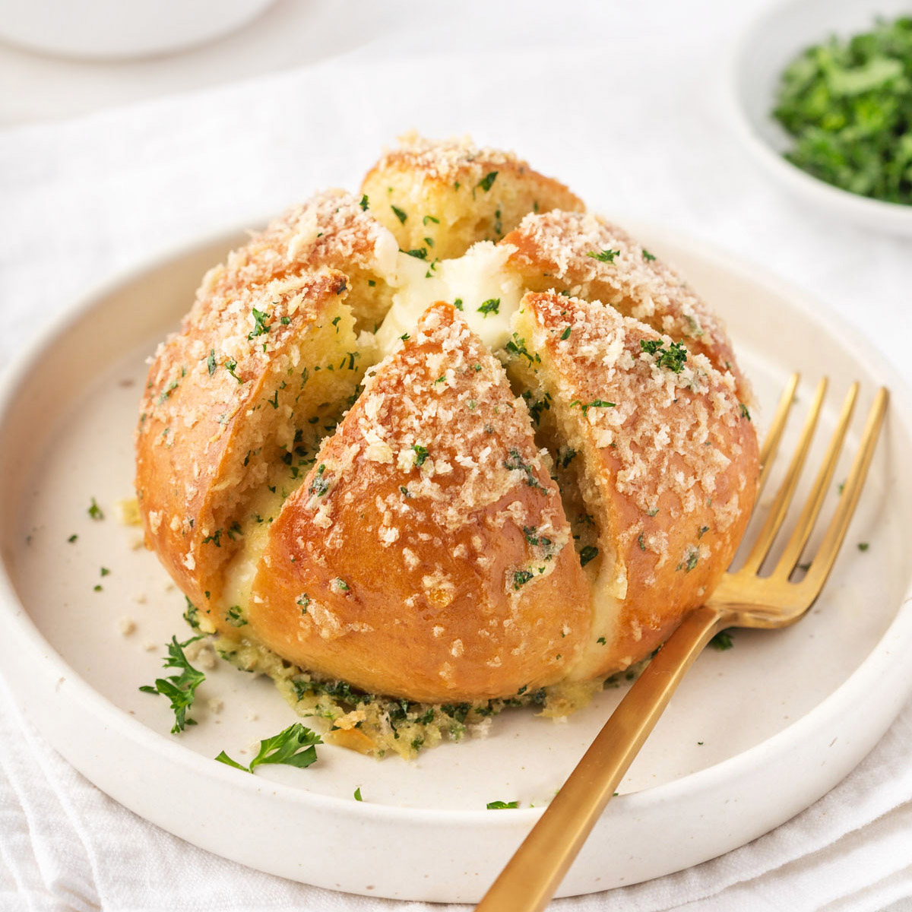

Korean garlic cheese bread is a popular street food in South Korea that combines the flavors of garlic, butter, and cheese in a delightful way. It typically involves a baguette or other types of bread filled with a mixture of garlic, butter, and cream cheese, then topped with additional cheese and baked until golden and gooey.
Meal prep time : 50 minutes
Servings : 4-6